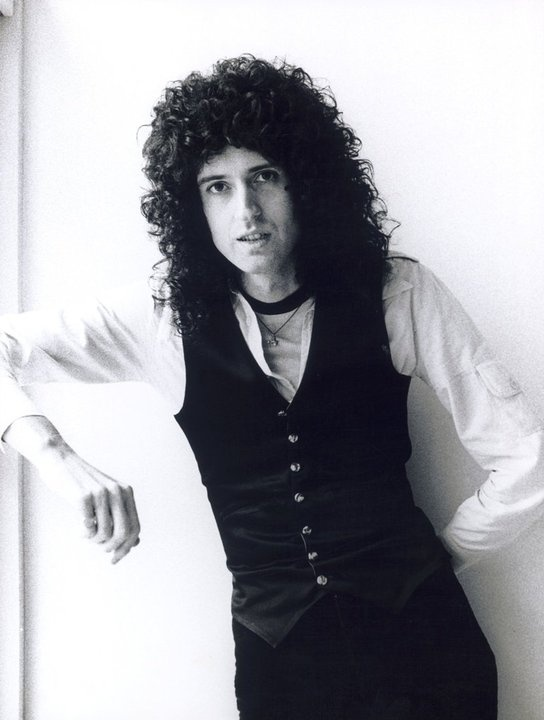
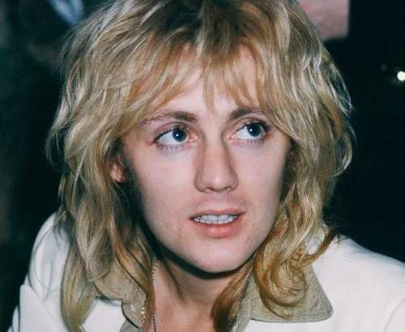
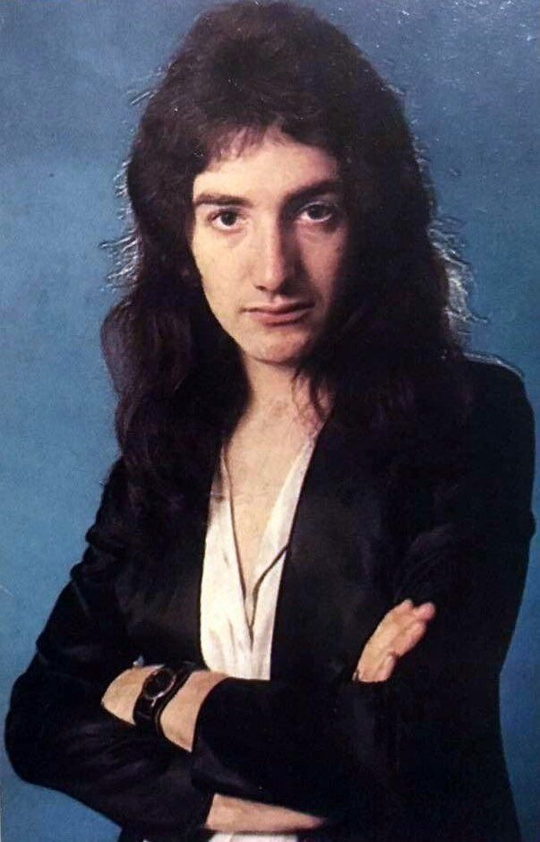

integrante |
biografia e imagen |
Freddie Mercury (cantante) |
Se llamaba Farrokh Bulsara y nació el 5 de septiembre de 1946 en la isla de Zanzíbar (Tanzania), situada en la costa este de África y famosa por su producción de especias. Figura provocadora, versátil y carismática como pocas, su prematuro fallecimiento el 24 de noviembre de 1991, a consecuencia del sida, conmocionó al mundo del espectáculo y a sus millones de seguidores en todo el planeta.

|
Brian Harold May (guitarrista)
|
Brian Harold May nació el 19 de julio de 1947 en Hampton, Richmond upon Thames, una pequeña ciudad al suroeste de Londres, Inglaterra. Es guitarrista, compositor, vocalista y en ocasiones teclista de la banda británica Queen. Utiliza una guitarra eléctrica hecha por él mismo, llamada red special |
Roger taylor (baterista) |
Nació el 26 de julio de 1949 en King's Lynn (Norfolk, Reino Unido). Se trasladó a Truro cuando tenía ocho años, a la misma edad en la que se unió a The Bubblingover Boys, una banda improvisada de jazz callejero en la que tocaba el ukelele. Como luego admitiría Roger, eran espantosos, pero eso no les impidió cobrarles a los vecinos por ir a verlos tocar. Los dejó en 1960, cuando se unió al coro de la Truro Cathedral School. Se compró una guitarra acústica barata y aprendió por sí mismo lo básico, pero lo dejó cuando se las arregló para juntar una batería. Él sabía que tocar la batería era más «lo suyo». |
Jhon Deacon (Bajista) |
John Richard Deacon (19 de agosto de 1951, Leicester, Reino Unido) es ex bajista de Queen. En varios discos también desempeñó el papel de guitarrista y más ocasionalmente de teclista. Es el autor de canciones como Another One Bust The Dust y I want To Break Free. |